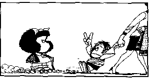

 |
|||||
Children's Rights in Krishna Consciousness Introduction: An ideal society should be controlled by love, and trust, like our Srila Prabhupada use to say. He teached us that in the Vedic times the King and Queen behaved like good protective parents of all citizens and that even some of them, like in the case of Maharaj Sibi, they sacrificed their selves just to protect a bird. Seeing the world through this prism it is actually shameful to speak about Children's Rights, because then we are recognizing that our society has come to a level of extreme insensibility and irresponsibility never imagined before. The simple sight of one of them should melt the heart of any observer. But it seems that this is not more like this, because not only for the observer is a child an unknown, but also for his parents that in many cases would have prefer to kill the child before he was born. The image of a child, a woman or an old person, are a natural call to give our affection and protection. But as the materialistic mentality grow in our society this three have become the principal victims of a world that day by day is turning more and more abuser and deaf. Welcome are all children that obliged us to develop virtues like affection, patient, tolerance, creativity, and responsibility. The incarnation of God, Rsabhadev, said that is the duty of the parents to conduct their children through the path of liberation. In this way the child convert immediately his parents into Gurus. Is there any greater blessing of responsibility to our Creator? In this way, every time one gets a child, God is telling us: “I put this soul under your protection. In the same way as I did to you, I am giving him this wonderful gift of the human body, teach him to take the most advantage out of it. Teach him to use it for the greatest welfare, that of spiritual service to humanity, of dedicating his entire life to come to Me…” To receive a duty or great responsibility is a guaranty that in the future one will get the fruit of that great responsibility, which is why one should see it as a great blessing, because if life don't send any responsibility to you, means that she does not expect anything from you, and she does not want to give you any special thing. That's why when we become aware of the Children's rights, as we have discussed before, these reach even the transcendental nature of teaching them about God; we become more conscious of those responsibilities that take us far beyond an animal consciousness. We should dive deep in the meditation and study of these rights. Don't forget that we are all God's children. Don't forget that we must give love to every child; they are a blessing to the Earth. Vaisnava das anudas Atulananda das
Declaration of Children's Rights in Krishna Consciousness: Proclaimed by General Assembly of Vaisnavas (WVA – The World Vaisnava Association – Visva Vaisnava Raj Sabha) 20 November 2002 Whereas the child, by reason of his physical and mental immaturity, needs special safeguards and care, including appropriate legal protection, before as well as after birth, Whereas the need for such special safeguards has been stated in the Vedic literature, like the Srimad Bahagavatam, and recognized by our Guru Paramapara concerned with the welfare of children, Whereas mankind owes to the child the best it has to give, Now therefore, The General Assembly of Vaisnavas (WVA – The World Vaisnava Association – Visva Vaisnava Raj Sabha) Proclaims this Declaration of the Rights of the Child to the end that he may have a happy childhood and enjoy for his own good and for the good of society the rights and freedoms herein set forth, and calls upon parents, upon men and women as individuals, and upon voluntary organizations, Spiritual Missions, Temples and their local authorities and well as National Governments to recognize these rights and strive for their observance measures progressively taken in accordance with the following principles: |
|||||
1- The child, for the full and harmonious development of his personality, needs love and understanding. He shall, wherever possible, grow up in the care and under the responsibility of his parents, and, in any case, in an atmosphere of affection and of spiritual, moral and material security; a child of tender years shall not , save in exceptional circumstances, be separated from his mother. 2- The child shall have full opportunity for play and recreation, which should be directed to the same purposes as material and spiritual education under the light of universal love; The family and the public authorities shall endeavor to promote the enjoyment of this right. They have also the right to rest as much as needed. 3- The child shall be thought who are his eternal parent, mother Nature and father Krishna, God, as the Vedas explain. 4- The child shall enjoy of tender and affectionate parents that protected him and helps him in any circumstance. The child shall be well guide and instructed about the adversities he may encounter in life. 5- The child shall enjoy of favorable conditions that enable him to develop physically, mentally, morally, spiritually and socially in a healthy and normal manner and in conditions of freedom and dignity. In the enactment of laws for this purpose, the best interests of the child shall be the paramount consideration. 6- The child shall receive all the necessary help to develop his creativity, talents, and faculties. 7- The child shall be given all means to learn, think freely, and learn about the power of free will and thinking and their proper use. 8- The child shall enjoy of learning about the beauty of being responsible, also about the laws that ruled the universe like that every action produce a reaction, and that, that is the answer to understand why the world is so at it is. We are the architects of our own destiny. 9- The child shall be entitled from his birth to a name and a nationality. The child shall be giving the right to belong to a material and spiritual family. 10- The child shall be protected against the materialistic interest of corporations that show the world as a market place where Consumerism is a number one priority, rather than a place to be thankful to Nature and God and a place to search for self realization. 10- The child shall be teach about the beauty of having compassion for all living beans. Ahimsa. 11- At the appropriate age the child shall be teach about sexual education, it's power of bringing life to this world, responsibility of sex, the dangers and misuse of it.
|
12- The best interests of the child shall be the guiding principle of those responsible for his education and guidance; that responsibility lies in the first place with his parents and in his Spiritual Master. 13- The child who is physically, mentally or socially handicapped shall be given the special treatment, education and care required by his particular condition always searching to improve his life in this world. 14- The child shall be protected against all forms of neglect, abandon, cruelty and exploitation. He should never be force to any activity that may injure his physical, psychological, or spiritual integrity. The child shall not be admitted to employment before an appropriate minimum age; he shall in no case be caused or permitted to engage in any occupation or employment, which would prejudice his health or education, or interfere with his physical, mental or moral development.
15- The child shall in all circumstances be among the first to receive protection and relief. 16- The child shall be protected of the degrading influence by the media -in the form of cruelty, violence, and pornography- that want to awake our lower instincts and disfigured the spiritual purport of our existence in this planet. 17- The Child shall be trained to be open minded, and respectful with all. 18- The child shall be protected against all types of discrimination. 19- The child shall be provided of all material for his spiritual education of understanding Krishna's message and the culture of love of God. 20- The child shall enjoy of spiritual programs where they can play and exchange with other children that also have a spiritual goal in their lives. 21- The child shall be provided of vegetarian and healthy food, as well as medical care. 22- Krishna's Children shall enjoy all the rights set forth in this Declaration. Every child in Krishna Consciousness without any exception whatsoever, shall be entitled to these rights, without distinction or discrimination on account of race, color, sex, language, or other opinion, national or social origin, property, birth or other status, whether of himself or of his family. |
||||